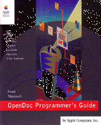

Inside Macintosh: OpenDoc Programmer's Guide

OpenDoc is a revolutionary cross-platform technology that replaces conventional applications with user-assembled groups of software components. With OpenDoc, users can create virtually any kind of custom software solution. The OpenDoc Programmer's Guide describes this component software revolution and explains how you can develop for it on the Mac OS platform. The book contains three parts:Part 1 is an overview of OpenDoc development. It explains what parts and part editors are, how embedding works, and how you should approach your development project.
Part 2 describes OpenDoc programming in detail. It includes chapters on embedding, drawing, menus, windows, storage, data transfer, scripting, and extending OpenDoc.
Part 3 provides guidelines for presenting the correct interface to your users.
The OpenDoc Programmer's Guide also includes an extensive glossary of OpenDoc terms and appendixes with checklists to speed your programming efforts.
See OpenDoc Class Reference for complete reference information about the OpenDoc programming interface.
Availability: Click below to obtain Inside Macintosh: OpenDoc Programmer's Guide in any of the following formats.

|
Acrobat (9.5 MB) |